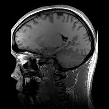
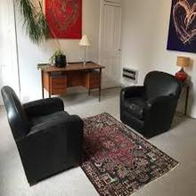
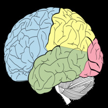

Danna Avila
My path towards my professional career has consisted of many goals, tears, and effort. More than 10 years of experience may sound easy, but it has consited of many hours of training, many hours of commuting, and many hours of commuting from school and work. After finishing my Bachelor of Arts in Psychology, my aspiration was to continue working towards receving my master and finally my Phd in Clinical Psychology. Throughout my academic career I have been involved in a variety of courses that have helped me developed my knowledge of psychology and how the brain works and functions. In addition to that, I have also been involved in a variety of research labs with individual professors that have also helped me gained a better knowledge of the different studies surrounding psyhology. In addition, througout my undergraduate career I was also involved in extra curricular activites around campus whether that was sport or study abroad. These two activities helped get in touch with individuals that have the same kind of goals and passions in life as me. However, they also helped gain confidence in talking to others as well as being more productive and managinig my time better.
My path throughout my undergraduate studies has definitely helped me understand myself better and become a better person to myself and to others. My path to achieve my Doctoral Degree in Clinical Psychology has just started and although it will be long, at the end it will all be worth it. The steps I aspire to take will involve taking a variety of exams and a variety of research labs, as well as publications in psychology. These types of publications will make my resume more intresting as well as increasing my knowldege of the psychology field and the brain. In addition, these types of psychology publications will help me work along scientists, research technitians, and professors to give my writing a better point of view. After my PhD I plan to work with a variety of hospital in order to put my therapy to practice and increase my knowledge with clients and staff.
I aspire that work in this world can extend to a variety of individuals that come from the same background as me. I aspire the my work in the psychology field will inspire women to pursue a higher education and to never stop working towards their dreams. I also aspire to be the best version of myself in order to help other pursue those goals and dreams.
Experience
Therapist
• Worked as therapist in the Psychiatric Hospital
• Author of "How to Live Your Best Life"
• Experience with serious mental disorders such as Trauma and PTSD
Imaging Technician
• Responsible for checking MRI screenings
• Responsible fot keeping instruments clean and working
Teaching Assistant
• Ran sessions to help students with different intriductory psychology courses
• Reviewed and graded students essays
• Created educational content to help promote student education and women education in psychology
• TA'd for over 200 students each academic semester
Education
University of California Riverside
Portfolio



